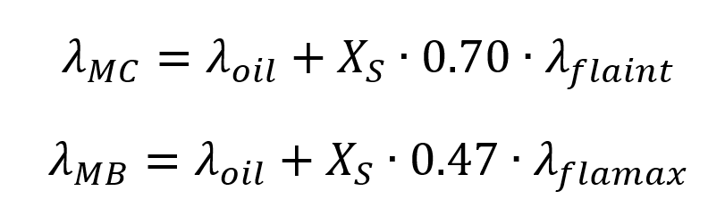

|
|
|


胶合的计算方法
胶合根据闪温法和积分温度法进行计算，使用以下选择选项：
- DIN 3990-4
如果根据 DIN 进行强度计算，胶合始终使用 DIN 3990-4 进行计算。
- ISO/TS 6336-20/21:2022
在所有其他情况下，若未使用 DIN 3990-4，则根据 ISO/TS 6336-20/21:2022 进行胶合计算。
与 DIN 3990-4 不同，以下公式用于齿体温度（类似于 ISO/TS 6336-20/21:2022）：

对于喷油润滑，XS=1.2（否则为 1.0）。按照 DIN 3990-4 的规定用系数乘以油温（λoil）几乎没有意义。
- DIN 3990-4，类似于STplus
STplus (Version 6.0) 使用根据 DIN 3990-4 的原始公式计算齿体温度。与 DIN 3990-4 不同，动态油黏度 ηM 根据油温（而不是齿体温度）计算。
Calculation method for scuffing
Scuffing is calculated according to flash temperature and integral temperature method using the following selection options:
- DIN 3990-4
If the strength calculation is performed according to DIN, scuffing is always calculated using DIN 3990-4.
- ISO/TS 6336-20/21:2022
In all other cases, where DIN 3990-4 is not used, the calculation of scuffing is always performed according to ISO/TS 6336-20/21:2022.
Contrary to DIN 3990-4, the following formulae are used for the tooth bulk temperature (analogous to ISO/TS 6336-20/21:2022):
For injection lubrication, XS=1.2 (otherwise 1.0). There is little point in multiplying the oil temperature (λoil) by the coefficient as specified in DIN 3990-4.
- DIN 3990-4, similar to STplus
STplus (Version 6.0) uses the original formulae according to DIN 3990-4 for the tooth bulk temperature. Contrary to DIN 3990-4, the dynamic oil viscosity ηM is calculated with the oil temperature (instead of the tooth bulk temperature).